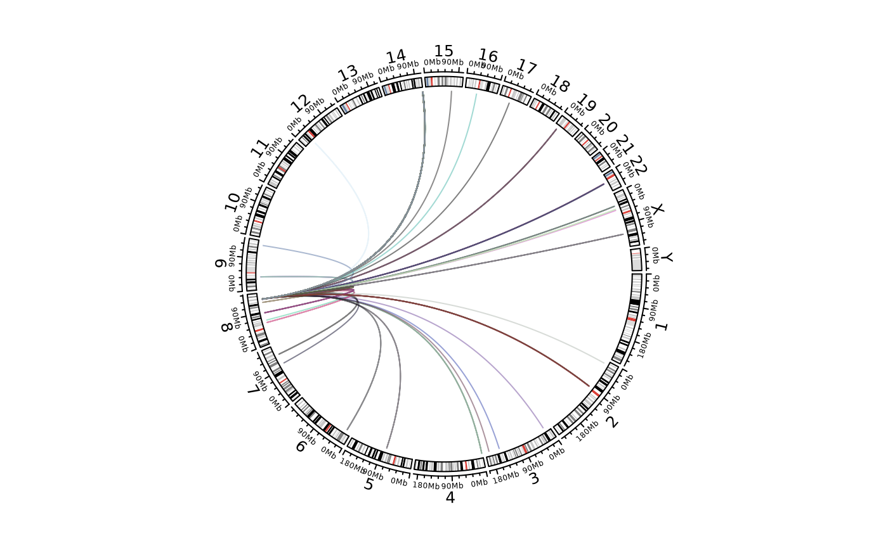
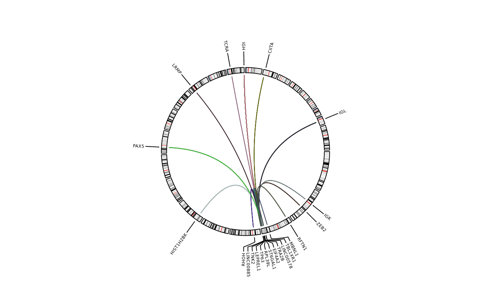
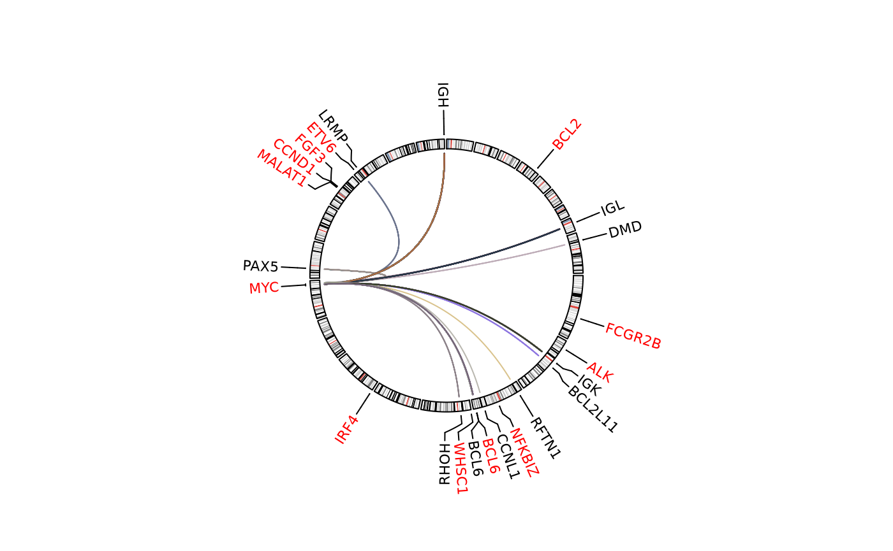
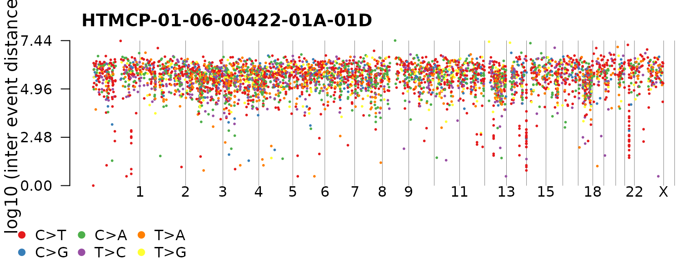
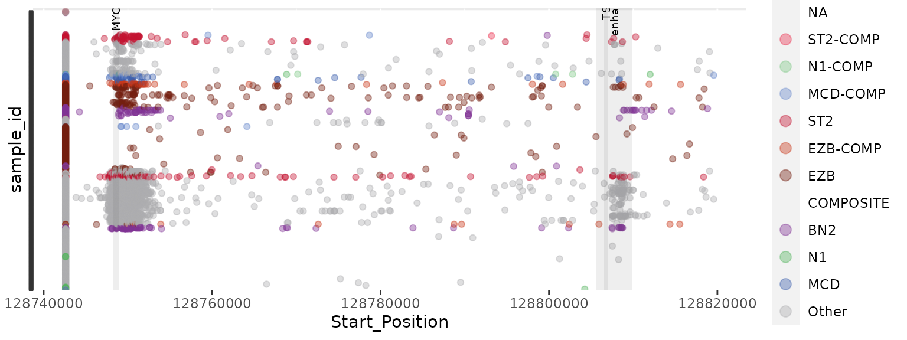
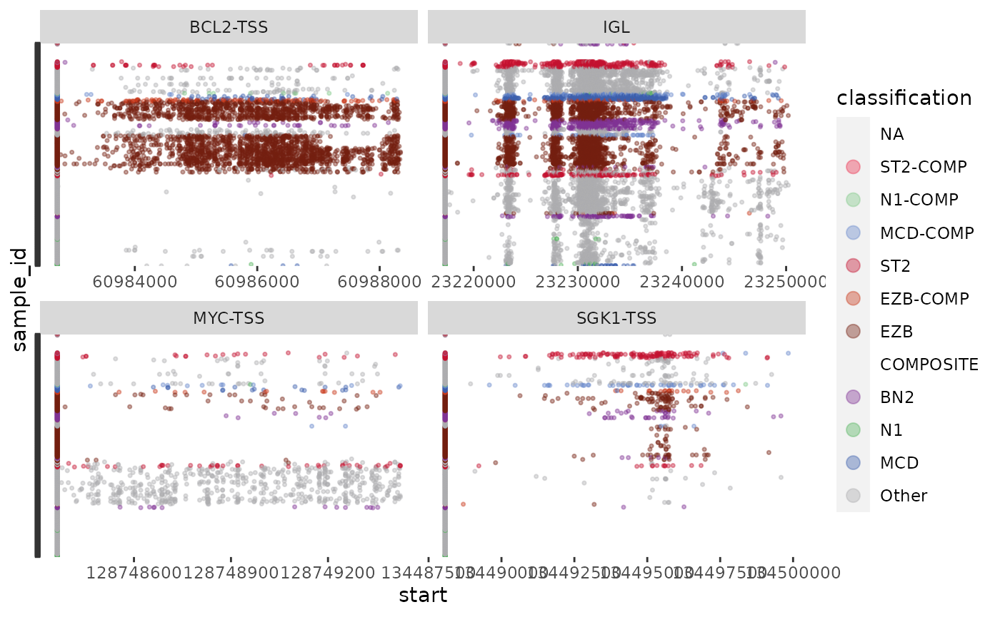
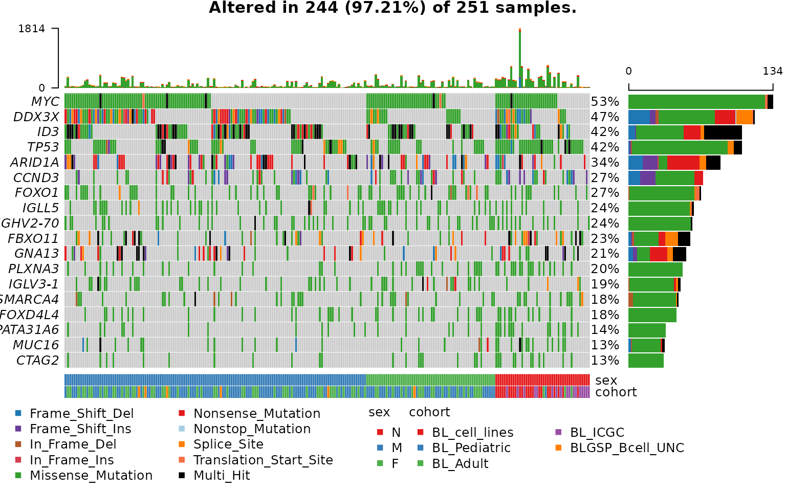

GAMBLR - working with GAMBL data painlessly in R
examples.RmdIf you haven’t already, clone the github repo: git clone git@github.com:morinlab/GAMBLR.git Run this vignette using the base directory of the GAMBLR repository as your working directory. See the Readme in the repository for more tips on getting set up.
# Load the GAMBLR package and other packages required by these examples.
library(GAMBLR)
require(tidyverse)
require(maftools)
require(circlize)
require(data.table)
require(rtracklayer)
require(RMariaDB)
require(DBI)The key level-1 GAMBL outputs are making their way into a MySQL (a.k.a. MariaDB) database. The most intuitive way to query the data is using the dbplyr R package. The initial connection and a method to determine what each table contains is shown below.
con <- DBI::dbConnect(RMariaDB::MariaDB(), dbname = "gambl_test")
# use DBI function to list the tables
all_table_names = DBI::dbListTables(con)
print(all_table_names)
#> [1] "analysis" "bedpe_manta_hg19" "biopsy_metadata"
#> [4] "derived_data" "maf_slms3_hg19" "maf_slms3_hg19_icgc"
#> [7] "maf_slms3_hg38" "outcome_metadata" "sample_metadata"
#> [10] "seg_battenberg_hg19"
# peek at the contents of each table.
for(table_name in all_table_names){
table_db <- tbl(con, table_name)
print(table_name)
}
#> [1] "analysis"
#> [1] "bedpe_manta_hg19"
#> [1] "biopsy_metadata"
#> [1] "derived_data"
#> [1] "maf_slms3_hg19"
#> [1] "maf_slms3_hg19_icgc"
#> [1] "maf_slms3_hg38"
#> [1] "outcome_metadata"
#> [1] "sample_metadata"
#> [1] "seg_battenberg_hg19"Get the metadata, automagically joining both tables and dropping normals and RNA-seq samples.
my_metadata = get_gambl_metadata()
# reduce to some of the more useful metadata fields
my_metadata = my_metadata %>% select(sample_id,biopsy_id,myc_ba,cohort,pathology)
print(head(my_metadata))
#> sample_id biopsy_id myc_ba cohort pathology
#> 1 BLGSP-71-06-00001-01A-11D BLGSP-71-06-00001-01 POS BL_Pediatric BL
#> 2 BLGSP-71-06-00004-01A-11D BLGSP-71-06-00004-01 POS BL_Pediatric BL
#> 3 BLGSP-71-06-00013-01B-11D BLGSP-71-06-00013-01 POS BL_Pediatric BL
#> 4 BLGSP-71-06-00080-01A-11D BLGSP-71-06-00080-01 POS BL_Pediatric BL
#> 5 BLGSP-71-06-00019-01A-11D BLGSP-71-06-00019-01 POS BL_Pediatric BL
#> 6 BLGSP-71-06-00008-01A-11D BLGSP-71-06-00008-01 NEG BL_Pediatric BL
#An important feature for reproducibility is that we all use the same exact subset of samples when performing various level-3 analyses for a study. This function effectively "locks in" a set of cases for a study based on some filters it applies automatically based on a study set identifier. For retrieving the metadata for all BLGSP cases with WGS data, you can use the following:
blgsp_metadata = get_gambl_metadata(case_set="BLGSP-study")
#as you can see this spans several cohorts and doesn't even just include BL pathology (for complex reasons)
blgsp_metadata %>% pull(cohort) %>% table()
#> .
#> BL_Adult BL_cell_lines BLGSP_Bcell_UNC BL_ICGC BL_Pediatric
#> 81 23 6 17 124
#If you want the sample_id (i.e. the Tumor_Sample_Barcode) for all these cases, for example to subset a MAF file, you can extract them into a vector:
blgsp_sample_ids = pull(blgsp_metadata,sample_id)
length(blgsp_sample_ids)
#> [1] 251The largest tables in the database are those that contain mutations from MAF files. The tables are simply all the rows and columns from a given merged MAF file. There will likely be four MAF-derived tables in this database, one for each reference build for “GAMBL” and the complete “GAMBL + ICGC”. Although the names may change, currently the tables are implicitly GAMBL-only unless they contain “icgc” in their name. For example, maf_slms3_hg19_icgc contains all hg19 (grch37/hs37d5) mutations from GAMBL and icgc_dart/external cases.
hg19_maf = tbl(con,"maf_slms3_hg19_icgc")
mutation_counts = hg19_maf %>% group_by(Tumor_Sample_Barcode) %>% tally()
print(head(mutation_counts))
#> # Source: lazy query [?? x 2]
#> # Database: mysql [rmorin@mysql01:NA/gambl_test]
#> Tumor_Sample_Barcode n
#> <chr> <int64>
#> 1 00-14595_tumorA 7139
#> 2 00-14595_tumorB 18212
#> 3 00-14595_tumorC 27633
#> 4 00-15201_tumorA 6423
#> 5 00-15201_tumorB 8255
#> 6 00-20702T 6335
mutation_counts %>% ggplot() + geom_histogram(aes(x=n),bins=100) + xlim(c(10,25000))
#> Warning: Removed 142 rows containing non-finite values (stat_bin).
#> Warning: Removed 2 rows containing missing values (geom_bar).
Here’s a histogram of the total number of mutations per genome across all GAMBL cases. Pretty hard to interpret this without metadata. There are two metadata tables. Often we need to join them both to get all the information we want.
sample_meta = tbl(con,"sample_metadata") %>% filter(seq_type == "genome" & tissue_status == "tumour")
#if we only care about genomes, we can drop/filter anything that isn't a tumour genome
#The key for joining this table to the mutation information is to use sample_id. Think of this as equivalent to a library_id. It will differ depending on what assay was done to the sample.
biopsy_meta = tbl(con,"biopsy_metadata") %>% select(-patient_id) %>% select(-pathology) %>% select(-time_point) %>% select(-EBV_status_inf)
# this table is keyed on biopsy_id. One biopsy can have more than one sample_id. This table must be joined to the sample table using biopsy_id. Because of some redundancy in columns between the two tables, I've dropped all redundant columns with the exception of biopsy_id.
all_meta = left_join(sample_meta,biopsy_meta,by="biopsy_id")
# IMPORTANT: the dbplyr package uses mysql queries under the hood to lazily retrieve the datat you need for each table on-the-fly. To properly use the efficiency of indexing and joins in MySQL, don't convert your tables into data frames until you're done all the necessary joins. Obtain all SV breakpoints (called by Manta) within a specific region of the genome and visualize them.
myc_locus_sv = get_manta_sv(region="8:128723128-128774067",pass=FALSE,with_chr_prefix=TRUE)
# we can override default that requires SV to meet the Manta "Pass" filtering criterion
# here we are also asking for the chromosomes to be named with a chr prefix (for circlize compatability)
bed1 = myc_locus_sv %>% select(CHROM_A,START_A,END_A,tumour_sample_id)
bed2 = myc_locus_sv %>% select(CHROM_B,START_B,END_B,tumour_sample_id)
colnames(bed1)=c("chrom","start","end","sample_id")
colnames(bed2)=c("chrom","start","end","sample_id")
myc_locus_sv = myc_locus_sv %>% select(tumour_sample_id,CHROM_A,START_A,CHROM_B,START_B,STRAND_A,STRAND_B,VAF_tumour)
print(head(myc_locus_sv))
#> tumour_sample_id CHROM_A START_A CHROM_B START_B STRAND_A STRAND_B
#> 1 00-15201_tumorB chr8 128727469 chr8 128727743 + +
#> 2 01-12047_tumorC chr8 128748814 chr14 106994498 - +
#> 3 01-14774_tumorA chr8 128727469 chr8 128727743 + +
#> 4 01-20774T chr8 66878096 chr8 128735744 + -
#> 5 01-20774T chr8 128771911 chr8 128920622 + -
#> 6 01-23117_tumorB chr8 128749370 chr14 106323836 - +
#> VAF_tumour
#> 1 0.151
#> 2 0.429
#> 3 0.163
#> 4 0.358
#> 5 0.951
#> 6 0.345
circos.initializeWithIdeogram()
circos.genomicLink(bed1, bed2,col = rand_color(nrow(bed1),transparency=0.5)) This package also includes a convenience function to facilitate annotation of common oncogene fusions/SVs in B-cell lymphomas.
unannotated_sv = get_manta_sv()
#in this example, let's just look at the SVs annotated as likely driving BCL6 expression
annotated_sv = annotate_sv(unannotated_sv,with_chr_prefix = TRUE) %>%
filter(!is.na(partner)) %>%
#select(-entrez) %>%
filter(gene=="BCL6") %>%
as.data.frame()
#> Warning in if (!grepl("chr", all.annotated$chrom1)) {: the condition has length
#> > 1 and only the first element will be used
print(head(annotated_sv))
#> chrom1 start1 end1 chrom2 start2 end2 name score strand1
#> 1 chr3 187462585 187462585 chr6 27107409 27107409 . 78 +
#> 2 chr3 187462600 187462600 chr6 27107409 27107409 . 90 -
#> 3 chr3 187462585 187462585 chr6 27107409 27107409 . 67 +
#> 4 chr3 187462600 187462600 chr6 27107409 27107409 . 93 -
#> 5 chr3 187462525 187462525 chr12 25207319 25207319 . 118 +
#> 6 chr3 187462548 187462548 chr12 25207342 25207342 . 97 -
#> strand2 tumour_sample_id gene partner fusion
#> 1 + 01-14774_tumorA BCL6 HIST1H2BK HIST1H2BK-BCL6
#> 2 - 01-14774_tumorA BCL6 HIST1H2BK HIST1H2BK-BCL6
#> 3 + 01-14774_tumorB BCL6 HIST1H2BK HIST1H2BK-BCL6
#> 4 - 01-14774_tumorB BCL6 HIST1H2BK HIST1H2BK-BCL6
#> 5 + 02-24492_tumorA BCL6 LRMP LRMP-BCL6
#> 6 - 02-24492_tumorA BCL6 LRMP LRMP-BCL6
#for labelling, get the unique set of partners
to_label =unique(annotated_sv$partner)
partner_label = grch37_partners %>%
filter(gene %in% to_label) %>% mutate(chrom = paste0("chr",chrom)) %>%
as.data.frame()
bed1 = annotated_sv %>% select(chrom1,start1,end1,tumour_sample_id,fusion)
bed2 = annotated_sv %>% select(chrom2,start2,end2,tumour_sample_id,fusion)
colnames(bed1)=c("chrom","start","end","sample_id","fusion")
colnames(bed2)=c("chrom","start","end","sample_id","fusion")
#circos.initializeWithIdeogram()
circos.clear()
circos.initializeWithIdeogram(plotType = NULL,chromosome.index = paste0("chr", c(1:22,"X")))
circos.genomicLabels(partner_label, labels.column = 4, side = "outside", cex=0.4,col='black')
circos.genomicIdeogram()
circos.genomicLink(bed1, bed2,col = rand_color(nrow(bed1),transparency=0.5))
unannotated_sv = get_manta_sv()
#Now let's try the SVs annotated as likely driving MYC expression
annotated_sv = annotate_sv(unannotated_sv,with_chr_prefix = TRUE) %>%
filter(!is.na(partner)) %>%
filter(gene=="MYC") %>%
as.data.frame()
#> Warning in if (!grepl("chr", all.annotated$chrom1)) {: the condition has length
#> > 1 and only the first element will be used
print(head(annotated_sv))
#> chrom1 start1 end1 chrom2 start2 end2 name score strand1
#> 1 chr8 134207510 134207517 chr9 36763818 36763825 . 46 +
#> 2 chr8 128748814 128748814 chr14 106994498 106994498 . 85 -
#> 3 chr8 128749370 128749370 chr14 106323836 106323836 . 122 -
#> 4 chr8 128749348 128749348 chr14 106323928 106323928 . 53 +
#> 5 chr8 128746623 128746625 chr14 106328385 106328387 . 60 -
#> 6 chr8 128922317 128922939 chr22 23114594 23114952 . 88 +
#> strand2 tumour_sample_id gene partner fusion
#> 1 - 00-26427_tumorA MYC PAX5 PAX5-MYC
#> 2 + 01-12047_tumorC MYC IGH IGH-MYC
#> 3 + 01-23117_tumorB MYC IGH IGH-MYC
#> 4 - 01-23117_tumorB MYC IGH IGH-MYC
#> 5 + 02-24492_tumorB MYC IGH IGH-MYC
#> 6 - 05-10981T MYC IGL IGL-MYC
#for labelling, get the unique set of partners
to_label =unique(annotated_sv$partner)
partner_label = grch37_partners %>%
filter(gene %in% to_label) %>% mutate(chrom = paste0("chr",chrom)) %>%
as.data.frame()
onco_label = grch37_oncogene %>% mutate(chrom = paste0("chr",chrom)) %>%
as.data.frame()
bed1 = annotated_sv %>% select(chrom1,start1,end1,tumour_sample_id,fusion)
bed2 = annotated_sv %>% select(chrom2,start2,end2,tumour_sample_id,fusion)
colnames(bed1)=c("chrom","start","end","sample_id","fusion")
colnames(bed2)=c("chrom","start","end","sample_id","fusion")
circos.initializeWithIdeogram(plotType = NULL,chromosome.index = paste0("chr", c(1:22,"X")))
#circos.genomicLabels(partner_label, labels.column = 4, side = "outside", cex=0.4,col='black')
#circos.genomicLabels(onco_label, labels.column = 4, side = "outside", cex=0.4,col='red')
all_labels = rbind(onco_label,partner_label)
cols= c(rep("red",length(onco_label$chrom)),rep("black",length(partner_label$chrom)))
circos.genomicLabels(all_labels, labels.column = 4, side = "outside", cex=0.7,col=cols)
circos.genomicIdeogram()
circos.genomicLink(bed1, bed2,col = rand_color(nrow(bed1),transparency=0.5))
This package has convenience features such as the ability to run liftOver on a set of coordinates (e.g. in bedpe format)
bedpe_hg19 = unannotated_sv %>% head(20) %>% as.data.frame()
print(head(bedpe_hg19))
#> CHROM_A START_A END_A CHROM_B START_B END_B NAME SOMATIC_SCORE
#> 1 1 1556541 1556547 1 1556664 1556670 . 40
#> 2 1 6012725 6012732 1 6012825 6012832 . 48
#> 3 1 8464072 8464090 1 8464293 8464311 . 40
#> 4 1 10084099 10084251 1 10084266 10084411 . 48
#> 5 1 10526162 10526172 1 10526290 10526300 . 40
#> 6 1 15878430 15878436 1 15878608 15878614 . 40
#> STRAND_A STRAND_B TYPE FILTER VAF_tumour VAF_normal DP_tumour DP_normal
#> 1 - - BND PASS 0.145 0 55 73
#> 2 + + BND PASS 0.156 0 32 85
#> 3 + + BND PASS 0.112 0 215 84
#> 4 - - BND PASS 0.186 0 43 50
#> 5 - - BND PASS 0.157 0 121 92
#> 6 + + BND PASS 0.119 0 126 101
#> tumour_sample_id normal_sample_id pair_status
#> 1 00-14595_tumorA 00-14595_normal matched
#> 2 00-14595_tumorA 00-14595_normal matched
#> 3 00-14595_tumorA 00-14595_normal matched
#> 4 00-14595_tumorA 00-14595_normal matched
#> 5 00-14595_tumorA 00-14595_normal matched
#> 6 00-14595_tumorA 00-14595_normal matched
bedpe_hg38 = liftover_bedpe(bedpe_df = bedpe_hg19,target_build = "hg38")
#> Warning in if (!grepl("chr", original_bedpe$CHROM_A)) {: the condition has
#> length > 1 and only the first element will be used
#> Warning: 20 parsing failures.
#> row col expected actual file
#> 1 -- 6 columns 12 columns literal data
#> 2 -- 6 columns 12 columns literal data
#> 3 -- 6 columns 12 columns literal data
#> 4 -- 6 columns 12 columns literal data
#> 5 -- 6 columns 12 columns literal data
#> ... ... ......... .......... ............
#> See problems(...) for more details.
#> Warning: 20 parsing failures.
#> row col expected actual file
#> 1 -- 6 columns 12 columns literal data
#> 2 -- 6 columns 12 columns literal data
#> 3 -- 6 columns 12 columns literal data
#> 4 -- 6 columns 12 columns literal data
#> 5 -- 6 columns 12 columns literal data
#> ... ... ......... .......... ............
#> See problems(...) for more details.
print(head(bedpe_hg38))
#> # A tibble: 6 x 19
#> CHROM_A START_A END_A CHROM_B START_B END_B NAME SOMATIC_SCORE STRAND_A
#> <chr> <dbl> <dbl> <chr> <dbl> <dbl> <chr> <dbl> <chr>
#> 1 chr1 1.62e6 1.62e6 chr1 1.62e6 1.62e6 . 40 -
#> 2 chr1 5.95e6 5.95e6 chr1 5.95e6 5.95e6 . 48 +
#> 3 chr1 8.40e6 8.40e6 chr1 8.40e6 8.40e6 . 40 +
#> 4 chr1 1.00e7 1.00e7 chr1 1.00e7 1.00e7 . 48 -
#> 5 chr1 1.05e7 1.05e7 chr1 1.05e7 1.05e7 . 40 -
#> 6 chr1 1.56e7 1.56e7 chr1 1.56e7 1.56e7 . 40 +
#> # … with 10 more variables: STRAND_B <chr>, TYPE <chr>, FILTER <chr>,
#> # VAF_tumour <dbl>, VAF_normal <dbl>, DP_tumour <int>, DP_normal <int>,
#> # tumour_sample_id <chr>, normal_sample_id <chr>, pair_status <chr>Working with all mutations from a sample.
# we can also directly query the database to get a MAF per patient for patient-centric visualizations. # this is not using the GAMBLR functions but shows an example of how unsupported queries can be accomplished. Beware queries that will return many thousands of variants. Thes will be slow and may fail if they're too greedy
# note that here I'm not restricting to only coding variants
example_dlbcl = hg19_maf %>% filter(Tumor_Sample_Barcode == "HTMCP-01-06-00422-01A-01D")
example_dlbcl_df = example_dlbcl %>% as.data.frame()
example_dlbcl_maf = read.maf(example_dlbcl_df)
#> -Validating
#> -Silent variants: 4552
#> -Summarizing
#> -Processing clinical data
#> --Missing clinical data
#> -Finished in 0.142s elapsed (0.404s cpu)
rainfallPlot(example_dlbcl_maf)
#> Processing HTMCP-01-06-00422-01A-01D..
DBI::dbDisconnect(con)What if you want to view the copy number landscape of a single patient and the VAF of somatic mutations in different copy number states? This can sometimes help you scrutinize whether the copy number fit looks reasonable.
#use the same sample as the previous example
my_sample = "HTMCP-01-06-00422-01A-01D"
copy_number_vaf_plot(this_sample=my_sample)
#> [1] "copy number colours"
#> Warning: Removed 52 rows containing missing values (geom_point).
#what if we want to focus on putative driver mutations? You can restrict this plot just to coding mutations and label genes of your choice.
#use the built in lymphoma gene list and subset for BL or DLBCL
my_genes=lymphoma_genes %>% filter(BL==TRUE | DLBCL == TRUE) %>% pull(Gene)
copy_number_vaf_plot(this_sample=my_sample,coding_only = TRUE,genes_to_label = my_genes)
#> [1] "copy number colours"
#> Warning: Removed 2 rows containing missing values (geom_point).
You may also be interested in visualizing all mutations across a given cohort (or every genome). This can only be done in relatively small regions. Here’s a way to visualize the non-coding mutation pattern across a region of interest.
# set up some coordinates to annotate in your plot (optional)
mybed = data.frame(start=c(128806578,128805652,128748315), end=c(128806992,128809822,128748880), name=c("TSS","enhancer","MYC-e1"))
# get the mutations within a region of interest
# note that we can specify the query chromosome with or without a chr prefix and it will be handled elegantly
my_mutations = get_ssm_by_region(chromosome="chr8",qstart=128743606,qend=128820015)
ashm_rainbow_plot(mutations_maf=my_mutations,metadata=my_metadata,bed=mybed)
A more advanced and fairly automatic plotting function for exploring multiple aSHM regions at once.
# Handy function that provides a vector of colours for giving points for different pathology/subgroups reproducible and distinguishable colours
lymphgen_colours = get_gambl_colours(classification="lymphgen")
# This package comes with some custom (curated) data such as the regions recurrently affected by hypermutation in B-NHLs
ashm_multi_rainbow_plot(regions_to_display=c("BCL2-TSS","MYC-TSS","SGK1-TSS","IGL"),custom_colours = lymphgen_colours)
#> Joining, by = "sample_id"
#> Joining, by = "start"
#> Joining, by = "sample_id"
Get all CN segments that overlap with a gene of interest and annotate them using the metadata.
my_segments = get_cn_segments(chromosome="4",qstart=83274467,qend=83295149)
print(head(my_segments))
#> ID chrom start end LOH_flag log.ratio
#> 1 1064-01-1TD 4 11870 190789536 0 0
#> 2 1182-01-03TD 4 69567 190785390 0 1
#> 3 1227-02-02TD 4 62724209 190790246 0 0
#> 4 1242-02-01BD 4 70761 190790246 0 0
#> 5 1296-01-03TD 4 98530 190762427 0 0
#> 6 1318-02-04BD 4 81303 190784332 0 0
deleted_segments = my_segments %>% filter(log.ratio<0) #use some lower value if you want to be more stringent
annotated_segments = left_join(deleted_segments,my_metadata,by=c("ID" = "sample_id"))
annotated_segments %>% pull(cohort) %>% table()
#> .
#> BL_Adult BL_Pediatric CLL_GenomeCanada DLBCL_ctDNA
#> 2 3 4 2
#> DLBCL_Gascoyne DLBCL_GenomeCanada DLBCL_HTMCP DLBCL_ICGC
#> 5 9 3 5
#> DLBCL_LSARP_Trios DLBCL_Marra FL_GenomeCanada FL_ICGC
#> 53 10 1 4
#> FL_Kridel MALY_Other_ICGC MCL_Morin MM_mmsanger
#> 6 3 4 4Retrieve all somatic mutations in a given gene and visualize them using MAFtools.
all_ssms = get_ssm_by_gene(gene_symbol=c("CCND3"),coding_only = TRUE)
all_ssms = all_ssms %>% as.data.frame()
# make a MAFtools object and plot a lollipop plot
maf_obj = read.maf(all_ssms)
#> -Validating
#> -Silent variants: 2
#> -Summarizing
#> -Processing clinical data
#> --Missing clinical data
#> -Finished in 0.098s elapsed (1.163s cpu)
lollipopPlot(maf_obj,gene="CCND3")
#> Assuming protein change information are stored under column HGVSp_Short. Use argument AACol to override if necessary.
#> 4 transcripts available. Use arguments refSeqID or proteinID to manually specify tx name.
#> HGNC refseq.ID protein.ID aa.length
#> 1: CCND3 NM_001136125 NP_001129597 220
#> 2: CCND3 NM_001760 NP_001751 292
#> 3: CCND3 NM_001136017 NP_001129489 211
#> 4: CCND3 NM_001136126 NP_001129598 96
#> Using longer transcript NM_001760 for now.
We can also extract a MAF-like data frame for a set of samples using any combination of cohorts or pathology to subset the data.
# load the master merged MAF (coding only). It's usually more efficient to do this than to try to add filters to this query. Instead, just filter the data afterward
maf_data = get_coding_ssm()
maf_metadata = get_gambl_metadata() %>% dplyr::rename("Tumor_Sample_Barcode"="sample_id")
maf = read.maf(maf_data,clinicalData = maf_metadata)
#> -Validating
#> --Removed 230 duplicated variants
#> -Silent variants: 48987
#> -Summarizing
#> --Possible FLAGS among top ten genes:
#> TTN
#> -Processing clinical data
#> -Finished in 20.5s elapsed (00:01:00 cpu)
# subset metadata, for example, to only BLGSP samples
blgsp_metadata = get_gambl_metadata(case_set="BLGSP-study")
# subset maf
blgsp_maf <- subsetMaf(maf, tsb=blgsp_sample_ids)
# perform analysis for subset maf
oncoplot(blgsp_maf,clinicalFeatures = c("sex","cohort"),sortByAnnotation = TRUE,genesToIgnore = c("TTN","LILRB1"))
Commonly, we will want to generate visualizations that only show genes deemed relevant for a given malignancy (and above some frequency threshold). There is a lymphoma_genes data frame bundled with this package that allows us a quick way to get a list of genes that are recurrently mutated in that disease. This list is quite long for most because it includes anything mutated at a frequency of at least (roughly) 0.5% in GAMBL.
#```{r tabulate_genes} #BL_genes_all = lymphoma_genes %>% filter(BL==TRUE) %>% pull(Gene) #print(BL_genes_all)
#determine what frequency each gene is mutated in across the extracted data set
#n = maf_data %>% select(Tumor_Sample_Barcode) %>% unique() %>% count()
#gene_sample_mut_freq = maf_data %>% dplyr::filter(Hugo_Symbol %in% BL_genes_all) %>% # dplyr::select(Hugo_Symbol, Tumor_Sample_Barcode) %>% unique() %>% # dplyr::group_by(Hugo_Symbol) %>% dplyr::tally() %>% # dplyr::mutate(frequency= 100 * n / 222)
#which genes are mutated in at least 10% of patients? #gene_sample_mut_freq %>% filter(frequency >=10)
#top_BL_genes = gene_sample_mut_freq %>% dplyr::filter(frequency >=10) %>% dplyr::pull(Hugo_Symbol)
#maftools::oncoplot(maf,clinicalFeatures = c(“sex”,“cohort”),sortByAnnotation = TRUE,genes=top_BL_genes)
#```
#```{r igv} # WARNING: this code chunk will fail unless you have IGV running and listening on port 60506 # The simplest scenario is to run this command on a terminal (if using a Mac), assuming you are using R on gphost10 and you have a ssh config that routes gp10 to that host. # Stretch goal/TODO: get this working with a headless igv # ssh -X gp10 # then launch IGV (e.e. from a conda installation): # conda activate igv; igv & #hg19/grch37 example #this_sv = annotated_sv %>% filter(partner==“HIST1H2BK”) %>% head(1) #bam_details = get_bams(sample=this_sv\(tumour_sample_id) #snapshot_home = "/home/rmorin/IGV_snapshots/" #snapshot = make_igv_snapshot(chrom=this_sv\)chrom2, start=this_sv\(start2, # end=this_sv\)end2, # sample_id=this_sv\(tumour_sample_id, # genome_build=bam_details\)igv_build, # bams = #c(bam_details\(tumour_bams,bam_details\)normal_genome_bams), # out_path=snapshot_home)
#library(imager)
#snapshot_image = imager::load.image(snapshot) #plot(snapshot_image,axes = FALSE) #```